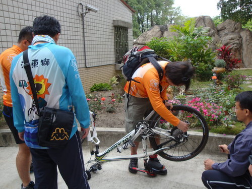
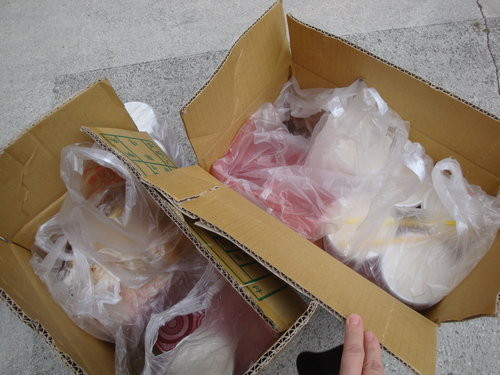
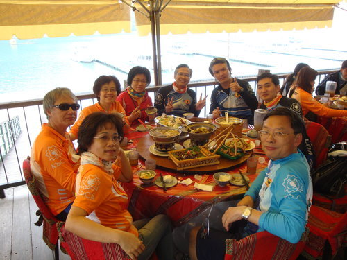
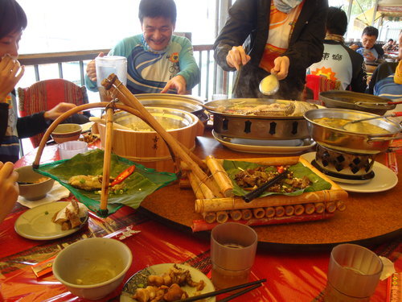
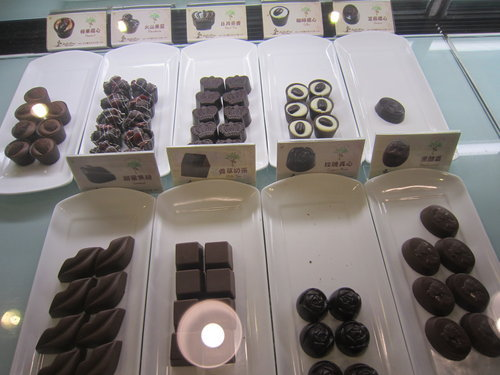

【「河東獅」社訊/沅孝報導】
河東獅2013年度大型活動─中台灣單車三日遊─終於在春暖花開的三月天揭開序幕，3月15日清晨鳳山宿舍門口集結一群熱血勇腳的獅友及其坐騎，在領導伉儷之帶領下，一行人浩浩蕩蕩出發，豐富行程精彩可期，難怪此次陣容橫跨河東公司、楠梓公司、高雄明誠分公司、健康公司、自由公司，還有金鐘獎得主劉姐共襄盛舉，反應熱烈！
第一天的行程就是眾所期待的「日月潭單車環潭」，日月潭環潭自行車道被CNN評選為全球十大最美自行車道，不僅是台灣的驕傲，更是車友一生必須朝聖之地。經過漫漫長途車程終於抵達目的地，大夥兒先在瑪蓋旦風味餐廳用餐，坐在臨湖的一排餐座，緊靠日月潭畔，一面享用邵族風味餐、一面欣賞日月潭的湖光山色，「瑪蓋旦」實至名歸！(按：瑪蓋旦在邵族語為「很漂亮」、「很棒」之意。)
吃飽喝足後，重頭戲來了，騎上單車享受全長約33公里之環湖公路，徜徉在日月潭的好山好水，山景倒映在波光粼粼的湖面上，有股沉靜之美。先經過玄奘寺，後上坡到慈恩塔下，直達玄光寺，從這裡眺望光華島，距離最近，離遠近馳名的「阿婆香菇茶葉蛋」也最近，再搭配「最佳後勤」雲龍大哥所泡的茶及準備的水果，果然很享受！接著前往向山行政暨遊客中心，在隧道前下坡轉彎處，竟發生摔車意外，連忙叫救護車將瑋瑋學姐送醫，雖然大夥兒繼續後續行程，但仍心繫瑋瑋學姐之傷勢，密切與陪同前往醫院的珮瑛學姐聯絡。向山行政暨遊客中心，貌似未完工之灰白建築，經導覽員解說方知，日本建築師團紀彥刻意用木紋模清水混凝土之工法，以融入原有地景為中心思想，斜坡式草皮可直通屋頂之半建築半地景之整體設計，不強調壯觀雄偉，反而去除稜角，以多種弧形從地面拉出所有空間，尋求與大自然的和諧。
長途騎車總該歇歇腳，午後來一杯咖啡佐上巧克力，是多麼愜意之事！接下來的連續數公里上坡路段，因為有明弘學長豪氣萬千請客的咖啡因加持，眾人絲毫不覺得疲憊，終於返抵今日下榻飯店日月潭青年活動中心，而瑋瑋學姐與珮瑛學姐也於晚餐時刻與大夥兒會合。夜幕低垂，身為獅友，活力依舊十足，晚間歡唱暨宵夜活動更是精彩。
出發前得知要卸車乃意料之外

Angel貼心準備的早餐

河東獅友出發囉！
臨湖用餐，「瑪蓋旦」！

遠方的捕魚船與餐桌上的菜餚形似

整裝出發前合影
日月潭，我們來朝聖了！
小燕學姐上坡身輕如燕

騎車三不五時要伸展大腿
小學妹有幸能與各位學長姐一同出遊，揪感心！
玄光寺遠眺光華島
品茗、水果及阿婆香菇茶葉蛋
瑋瑋學姐意外摔車
日月潭單車山路小徑
柏宏學長馬上英姿
被CNN評選為全球十大最美自行車道─日月潭環潭自行車道
美得令你窒息了嗎？
向山行政暨遊客中心---極富巧思的綠建築隱藏在山林之間
午後咖啡佐巧克力，謝謝明弘學長！

瑋瑋學姐負傷歸隊琇琇秀秀
獅友專屬晚間歡唱暨宵夜活動
夜間與白天一樣的精彩....別忘了.....明天還有一場硬仗喲～～